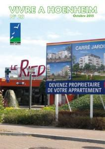
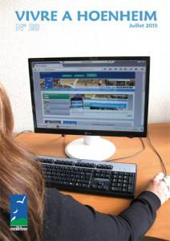
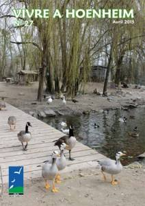
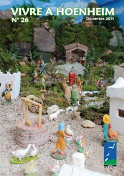
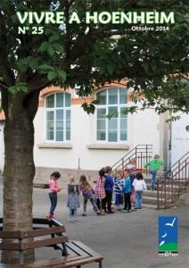

Le mag
Vivre à Hoenheim N°29

Vivre à Hoenheim N°29 Au sommaire : le conseil municipal, deux réunions de quartiers, la rentrée des classes, le programme du centre socioculturel, les rendez-vous « Musique et culture » 2015-2016, les actions des Scouts …
Vivre à Hoenheim N°28

Au sommaire du magazine de juillet : quatre réunions de quartiers, les animations à la Ballastière, le Pôle Automobile, les travaux au Super U, portrait de la société Luence, un artiste de la bande dessinée … Accédez aux autres magazines
Vivre à Hoenheim N°27

Au sommaire de votre journal d’avril 2015 : les résultats des élections au Conseil départemental, la visite de Robert Herrmann, président de l’Eurométropole, le projet du club-house au gymnase du Centre, la rénovation des installations au parc animalier de la Vogelau, la réunion publique concernant le projet commercial du Ried, le Plan local d’urbanisme … Accédez […]
Vivre à Hoenheim N°26

Au programme de votre journal municipal de décembre 2014 la rencontre de quartier aux Emailleries, le nouveau responsable du bureau de police nationale, l’extension des ateliers municipaux, le « kamishibai » de la crèche familiale, le chantier de l’EHPAD intercommunal « les Colombes », le nouveau président de l’épicerie sociale « Les Epis »…
Vivre à Hoenheim N°25

Dans votre journal d’octobre 2014, vous trouverez les informations sur la rentrée des classes, les animations « Musique et culture » pour l’année 2014/2015, les lauréats du concours Fleurissement, les créations des assistantes maternelles, le déploiement de la fibre optique, des ateliers pour préparer Noël …